ORQUIDÁRIO
O orquidário é um projeto desenvolvido em parceria com o Ohquidea que busca resgatar orquídeas e replantá-las em outros espaços. Dessa maneira, o orquidário da Missão Ambiental foi estruturado para receber as orquídeas descartadas. Entre as espécies destacam a Wanda, Cymbidium, Cattleya e Phalaenopsis.

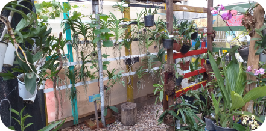
OFICINAS DE EDUCAÇÃO AMBIENTAL
As oficinas de educação ambiental são momentos organizados para expor, discutir e sensibilizar as pessoas sobre as temáticas relacionadas ao meio ambiente. Entre as oficinas foram realizadas sobre PANCs – Plantas Alimentícias Não Convencionais, ninho-isca para abelhas nativas sem ferrão, orquídeas.
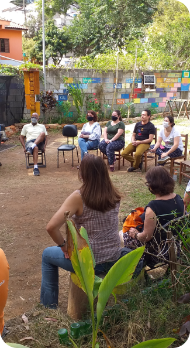
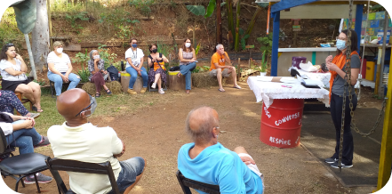
CAPTAÇÃO DE ÁGUA DE CHUVA:
O sistema de captação de água pluvial foi implantado pelo parceiro Edison Urbano da Sempre Sustentável com o objetivo de reaproveitar a água de chuva coletada pelo beiral do vizinho. A água fica armazenada na bombona de 200L e o excesso é direcionado para os canteiros de hortaliças. Além disso, é utilizado para lavar as mãos, rega da horta educativa comunitária e armanezado em recipientes plásticos.
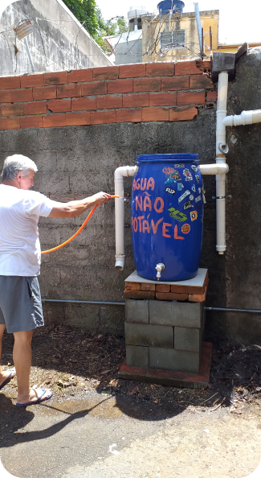
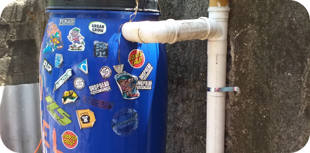
HORTA EDUCATIVA COMUNITÁRIA:
A horta educativa comunitária foi idealizada para proporcionar experiências sensoriais, alimentação orgânica e dinamismo. É uma horta suspensa confeccionada com caixas de isopor e mesas de madeiras remontadas de paletes. A terra e o substrato é uma produção orgânica do espaço oriundo da compostagem comunitária.Entre as hortaliças produzidas nas caixas estão vagem, hortelã, manjericão, peixinho da horta, salsa japonesa, quiabo, serralha, vinagreira, melissa, cebolinha, erva doce, jiló, feijão preto, erva cidreira, jambu, coentro-selvagem, entre outros.
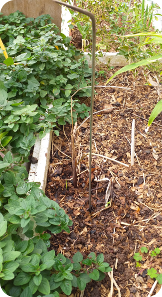
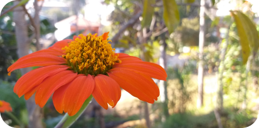
COMPOSTAGEM
A Missão Ambiental destina seus resíduos orgânicos para a compostagem. No espaço emprega-se diferentes formas de compostagem, sendo utlizadas a vermicompostagem, compostagem termofílica, compostagem de valetas, compostagem de materiais secos e compostagem de mosca soldado negra.
A compostagem termofílica é aquela que agrega maior número de pessoas para apoio, controle da quantidade de resíduos e da temperatura das leiras.
A compostagem em valetas é a mais utilizada e recomendada para áreas verdes compactadas. O resíduo orgânico é depositado em um buraco superficial e depois coberto em canteiros de árvores e vegetação que se deseja nutrir.
A vermicompostagem é a compostagem empregada em recipientes com ajuda das minhocas californianas (Eisenia fétida) para decomposição de resíduos orgânicos. O processo prevê a coleta de biofertilizante e reaproveitamento do composto líquido.
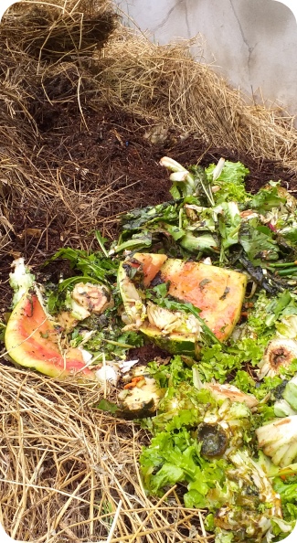
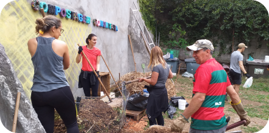
ÁRVORES NATIVAS:
Ao longo do período de 5 anos foram plantadas algumas espécies nativas de Mata Atlântica e Cerrado Paulista para reflorestamento da área degradada. Entre elas estão espécies como Jaracatiá (Jacaratia spinosa), Cambuci (Campomanesia phaea), Lobeira (Solanum lycocarpum), Araucária (Araucaria angustifolia), Pau Jacaré (Piptadenia gonoacantha), Bacupari (Garcinia gardneriana), Juçara (Euterpe edulis), Embaúba Prateada (Cecropia hololeuca), Cereja-do-Rio-Grande (Eugenia involucrata), Pitanga Preta (Eugenia uniflora), Cambucá (Plinia edulis), Embira-de-Sapo (Lonchocarpus muehlbergianus), Uvaia (Eugenia pyriformis), Jequitibá Branco (Cariniana estrellensis), Angico Vermelho (Anadenanthera macrocarpa) Ingá-do-Brejo (Inga uruguensis), Cabeludinha (Myrciaria glazioviana), entre outras.
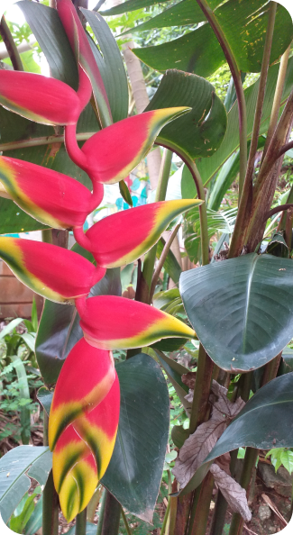

ABELHAS SEM FERRÃO
A Missão Ambiental em parceria com o SOS Abelhas Sem Ferrão ajuda a preservar e conscientizar sobre as abelhas nativas. O espaço conta com diversas espécies de abelhas sem ferrão como mirim droryana (Plebeia droryana), jataí (Tetragonisca angustula), arapuá (Trigona spinipes), boca-de-sapo (Partamona helleri), mandaguari (Scaptotrigona Xanthotrich) e marmelada amarela (Frieseomelitta varia). Além disso, contribuem para a diversidade as abelhas nativas solitárias como abelha euglossa (Euglossa bazinga) e as mamangavas (Bombus terrestris).
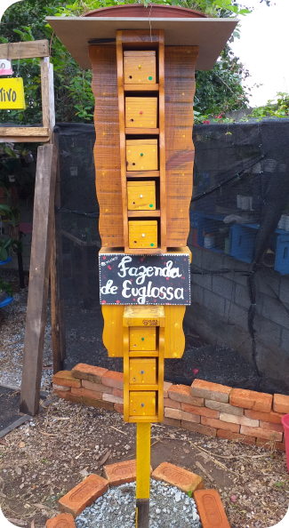
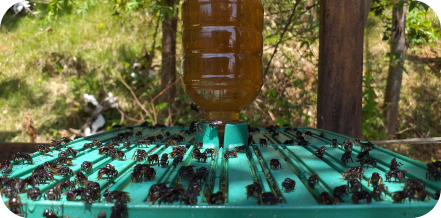